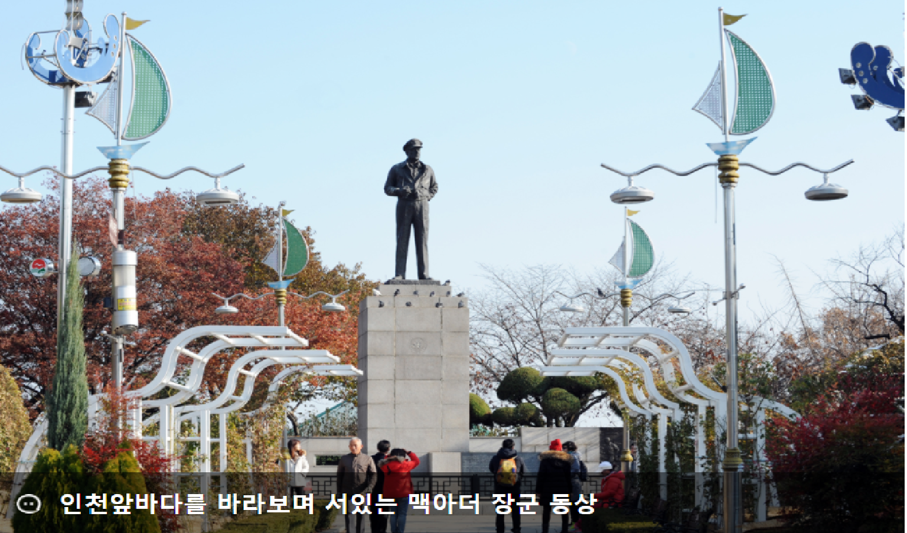
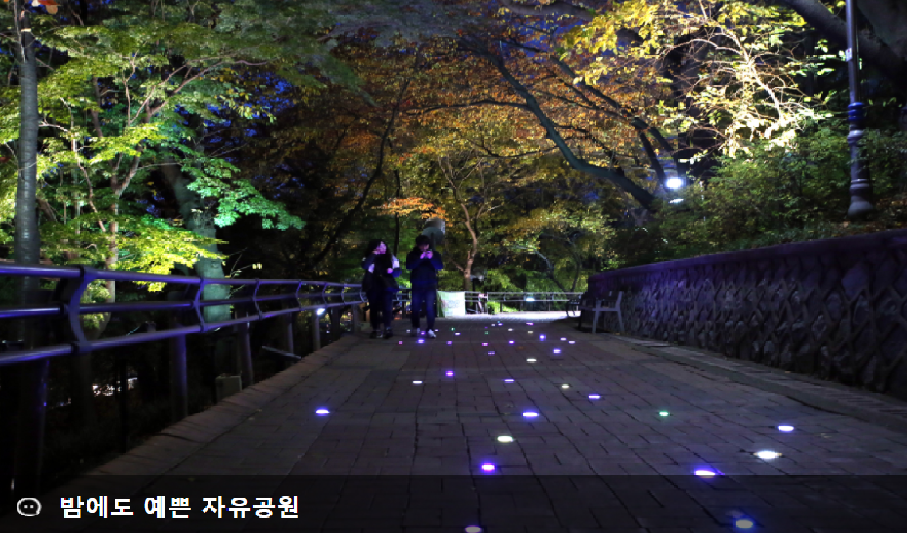
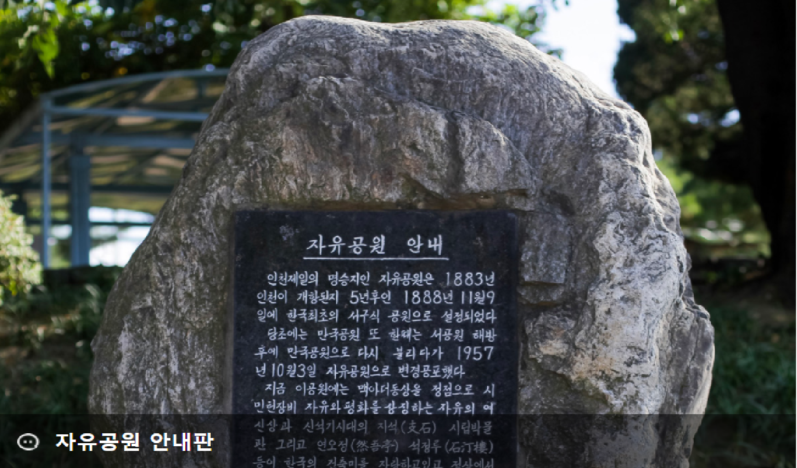

인천자유공원
- 인천자유공원
- 자유공원은 인천항 개항 뒤인 1888년 외국인 거류민단에서
관리·운영하여 당시 시민들은 이를 ‘각국공원‘이라 불렀고,
그 뒤 일본의 세력이 커지면서 1914년 각국 거류지의 철폐와 함께
공원 관리권이 인천부로 이관되자 그때부터는 서공원으로 불렸다.
1945년 해방 후에는 만국공원으로 불렸으며, 인천상륙작전을 지휘한
맥아더 장군의 동상이 세워진 1957년 10월 3일부터 자유공원으로 개칭되었다.

인천자유공원
- 인천자유공원
- 우리나라 최초의 서구식 공원인 자유공원은 인천시민뿐만 아니라
각 지역에서 찾아올 만큼 사계절 늘 아름다운 풍경으로 시민들을 맞이하고 있다.
인천 중구 시가지와 인천항을 한눈에 바라볼 수 있는 시민의 휴식·위락 장소이며
4월에는 ‘자유공원 벚꽃축제’가 열리고, 미술대회·글짓기대회 같은 각종 행사도 자주 열리는
인천의 명소이다.

인천자유공원
- 인천자유공원
- 응봉산 전체를 자유공원이라 부르며, 한미수교 100주년 기념탑을 비롯해
자연보호헌장탑, 충혼탑, 석정루 등을 보존하고 있다. 석정루에 오르면 인천항과 월미산 북성포구 등이
한 눈에 들어오는 장관이 펼쳐진다.
